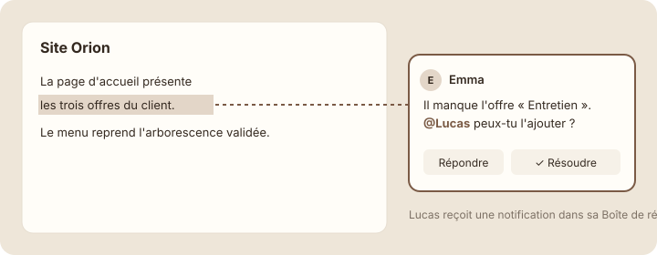

Commentaires et mentions
Étape 1 : comprendre
Une fois la page partagée, l'équipe peut échanger directement dessus, au lieu de s'envoyer des e-mails du genre « dans le document, deuxième paragraphe, il manque… ». Deux outils servent à ça.
Le commentaire. Tu peux commenter :
- un passage précis : sélectionne le texte, puis clique sur « Commenter » (Comment) dans la petite barre qui apparaît. Le passage est surligné, et le commentaire s'affiche à côté ;
- la page entière : survole le haut de la page, sous le titre, et clique sur « Ajouter un commentaire » (Add comment).
Les autres peuvent répondre, ce qui crée une discussion. Quand la question est réglée, on clique sur « Résoudre » (Resolve) : le commentaire disparaît de la page, mais reste consultable dans l'historique des commentaires.
La mention « @ ». Tape « @ » suivi d'un prénom : la personne reçoit une notification dans sa Boîte de réception (module 1). C'est la façon de dire « ceci te concerne ». Tu peux mentionner quelqu'un dans un commentaire ou directement dans le texte de la page.

Un commentaire discute d'un passage sans le modifier ; une mention « @ » prévient la personne concernée.
Astuce : un bon commentaire dit quoi faire et qui le fait : « @Lucas peux-tu ajouter l'offre Entretien avant jeudi ? » plutôt que « il manque un truc ».
La discussion autour de Site Orion
Voici la discussion autour de la page « Site Orion », dans l'ordre où elle s'est déroulée.
Site Orion
La page d'accueil présente les trois offres du client. Le menu reprend l'arborescence validée.
Lucas : C'est fait, j'ai ajouté le paragraphe.
Emma : Parfait, merci ! → Résolu
Emma n'a pas modifié le texte elle-même : elle a signalé le problème à la bonne personne, au bon endroit. Lucas a été prévenu par sa Boîte de réception, a corrigé, puis Emma a résolu le commentaire. La page reste propre.
Commenter, répondre, résoudre
- Ouvre la page « Site Orion » de ta base « Projets » (ou n'importe quelle page avec du texte).
- Sélectionne quelques mots. Dans la barre qui apparaît, clique sur « Commenter ».
Capture d'écran Notion Commenter un passage · images/captures/m07-commenter-passage.png
- Écris : « À vérifier avec le client. » et valide avec Entrée.
- Clique sur ton commentaire et réponds-y : « Vérifié, c'est bon. »
- Clique sur « Résoudre » (l'icône ✓). Le surlignage disparaît.
Capture d'écran Notion Résoudre un commentaire · images/captures/m07-resoudre.png
- Si un collègue a accès à la page, mentionne-le dans un nouveau commentaire avec « @ » suivi de son prénom. Sinon, mentionne-toi toi-même pour voir la notification arriver dans ta Boîte de réception.
Attention : mentionner quelqu'un sur une page à laquelle il n'a pas accès peut lui envoyer une demande de partage, ou ne rien lui montrer. Vérifie l'accès de la personne avant de compter sur la mention.
Exercice · dans Notion
Discuter sur la page
- Ajoute un commentaire sur un passage d'une page.
- Réponds à ton commentaire, puis résous-le.
- Ajoute une mention « @ » (d'un collègue ou de toi-même) et ouvre ta Boîte de réception.
Résultat attendu : le commentaire a disparu de la page après résolution. Dans la Boîte de réception de la personne mentionnée, une notification renvoie directement au bon endroit de la page.
Étape 4 : vérifier
À retenir
Objectif de la leçon : tu sais maintenant commenter une page, répondre, résoudre une discussion et prévenir un collègue avec une mention.
- On commente un passage précis (sélection) ou la page entière.
- Une mention « @prénom » envoie une notification dans la Boîte de réception.
- Une fois la question réglée, on résout le commentaire : la page reste propre.
Choisis une réponse avant de valider.
Le commentaire situe le problème au bon endroit, et la mention prévient Lucas directement.
Choisis une réponse avant de valider.
Résoudre range la discussion : la page reste lisible, et l'historique est conservé.